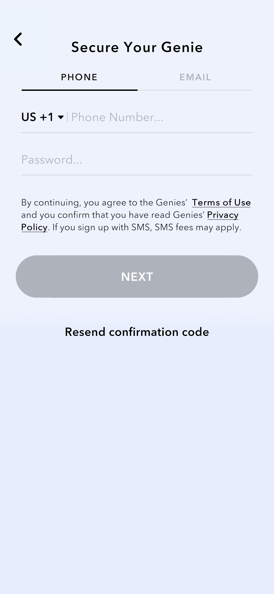
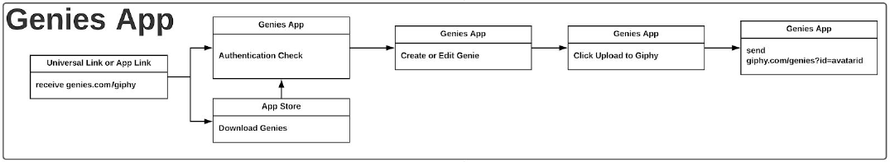

Avatar API#
The Avatar API allows developers to connect their users with their digital Avatars!
Users can access a library of Avatar Stickers and Avatar Animations and take their digital expressiveness to a new level.
User authentication#
In order to use the Avatar API features in your app, users must be logged into Genies.
To authenticate a user you need to redirect them to the Genies app. When landing into the Genies App the user needs to create an account or log in. After logging in, the user will be presented the Avatar Creator screen.
The Genies app will show a button for users to get back to your app after saving their Avatar.


Avatar Id#
The authentication process will provide an avatarId that will be used in all interactions with the Avatar API. The avatarId should be saved and associated with your user's account.
User flow#
User authentication requires using deep links between your app and the Genies app.
Deep link#
A customized deep link will be made available to you in the Avatar SDK approval process.
e.g. https://genies.com/your_app_name
When redirecting back to your app, Genies will use a deep link provided by you and send back the user's avatarId
e.g. https://your_app_domain.com/genies?id=avatarId
Deep link from your app to Genies#
In order to authenticate the user you need to open the Genies App with the provided deep link.
Steps:
- Open the Genies app using the deep link
- If the user is not already logged into Genies, the log in form will be presented
- After logging into Genies, the user will create their Avatar
- After saving the Avatar, the Genies app will redirect the user back to your app using the deep link and provide the user's
avatarId

Deep link from Genies to your app#
After the user creates/edits their Avatar in the Genies App they will be redirected to your app with a deep link and will provide the user's avatarId.
e.g. https://your_app_domain.com/genies?id=avatarId
The avatarId provided when redirected back from the Genies app should be saved and associated with the app user. All other Avatar API interactions will use the avatarId.
Avatar Animations#
After authenticating the user, you can use the Renderer API to generate Avatar Animations. Avatar Animations are generated as MP4 with background transparency support.
You can find more info about working with the Avatar Animations here
Avatar Stickers#
Avatar Stickers are generated as PNG from a keyframe of an Avatar Animation. For more info see getting a sticker
Renderer API#
To generate and get Avatar Stickers and Avatar Animations the Avatar SDK provides the Renderer API.
HTTP Request URL#
The Renderer API URL is:
https://render.genies.com
Getting the animations list#
To get a list of animations available for a user's Avatar call GET https://render.genies.com/animation/{{avatarId}}
The {{avatarId}} is provided when authenticating the user.
Every animation has a name, url and rendering status
The lastModified property represents the timestamp when the animation was generated. If the user updated their Avatar and the animation is stale, you should request a re-render to get the animation with the latest user Avatar.
Example
curl --location --request GET 'https://render.genies.com/animation/3f8b634d-fcf6-4a24-a552-cdfda98893f5'
Response
[
{
"name": "80AerobicPoint-002",
"url": "https://genies-dev.s3-us-west-2.amazonaws.com/3f8b634d-fcf6-4a24-a552-cdfda98893f5/80AerobicPoint-002.mp4",
"status": "ready",
"lastModified": 1611282457,
"tags": [
"animation"
]
},
{
"name": "Anger-003",
"url": "https://genies-dev.s3-us-west-2.amazonaws.com/3f8b634d-fcf6-4a24-a552-cdfda98893f5/Anger-003.mp4",
"status": "ready",
"lastModified": 1611282457,
"tags": [
"animation"
]
}
]
Getting a sticker#
You can generate an Avatar Sticker as PNG from a keyframe of any animation by calling GET https://qvvri16pqd.execute-api.us-west-2.amazonaws.com/image/{{avatarId}}/{{animationName}}
The {{avatarId}} is provided when authenticating the user. The {{animationName}} is found in the animations list
Stickers should be saved and cached by the developer.
Example
curl --location --request GET 'https://qvvri16pqd.execute-api.us-west-2.amazonaws.com/image/050ec53c-a12a-445a-9611-ff5fc3ab78f8/Laughing-004'
Response
The response is the generated photo as image/png. The PNG has transparency and the resolution is 1000x1000. If you need to use a different resolution please contact the Genies Team.
Getting an animation#
You can get the MP4 for an animation by calling GET https://qvvri16pqd.execute-api.us-west-2.amazonaws.com/animation/{{avatarId}}/{{animationName}}
Animations should be saved and cached by the developer.
Example
curl --location --request GET 'https://qvvri16pqd.execute-api.us-west-2.amazonaws.com/animation/050ec53c-a12a-445a-9611-ff5fc3ab78f8/DiscoDance-003'
Response
The response is the generated animation as video/mp4
Using Avatar Animations#
The animations generated by the Renderer API are supplied in a video/mp4 format with background transparency support.
The video files contain two video streams: the first containing the main YCbCr content, the second containing Y content representing the alpha mask.
To process the video files for your use case we recommend using FFMPEG.
Transcoding to WebM#
With the video in two streams, use the “alphamerge” filter element to recombine into a single stream when transcoding into formats that support alpha:
ffmpeg -i Combined.mp4 -filter_complex "[0:0][0:1] alphamerge" -pix_fmt yuva420p -an combined.webm
Transcoding to GIF#
-
Generate palette
ffmpeg -i Combined.mp4 -filter_complex "[0:v] palettegen" palette.png -
Generate GIF
ffmpeg -i Combined.mp4 -i palette.png -filter_complex "[0:0][0:1] alphamerge [merged]; [merged][1:v] paletteuse" Combined.gif
Transcoding to PNG#
To create a looping 24-bit animated PNG:
ffmpeg -i Combined.mp4 -filter_complex "[0:0][0:1] alphamerge" -f apng -plays 0 transcoded.png
To convert the video into a set of PNG frames with alpha:
ffmpeg -i Combined.mp4 -filter_complex "[0:0][0:1] alphamerge" frames_with_alpha%04d.png